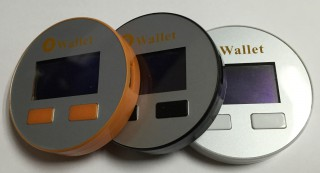

BWallet 用户手册¶
感谢您选择BWallet！¶
BWallet是一款高安全级别的硬件钱包。 详细阅读本说明书，有利于更详细的掌握BWallet的使用方法。如有疑问，请联系：support@bidingxing.com
关于BWallet¶
BWallet是一款带有存储和计算能力的比特币硬件钱包。登录mybwallet.com，通过BWallet设备可以安全便捷地管理您的比特币。BWallet内部完成私钥的生成、保存和签名计算。管理比特币的整个过程从物理层面隔离保护您的私钥，从而大幅度提高资金的安全性。
mybwallet.com¶
mybwallet.com是为BWallet专门设计的轻量级在线钱包。网站不记录任何用户数据，仅提供区块链数据服务。即使是公钥，也只是保存浏览器本地缓存，并且用户可以根据需要选择“是否记住”这些信息。
配置浏览器环境¶
- 打开浏览器(建议使用主流浏览器:IE,Safari,Chrome,Firefox等)访问:mybwallet.com；
- 根据页面提示初始化浏览器环境，同一台电脑仅需配置一次环境。页面会提示您为浏览器安装jre，并允许Applet插件。Applet插件是帮助您的浏览器访问BWallet设备；
- 当您在网页上看到“开始，请插入BWallet设备”时，说明您的浏览器环境已经配置成功；
初始化BWallet¶
通过自带的USB数据线连接BWallet到您的计算机；
填写“设备标签”（标签目前只支持英文标签）;
选择“设备语言”（此项是为BWallet设备设定的）
高级用户可点击“高级设置”
- 选择“种子长度”（默认24个）
- 选择是否启用PIN码保护（默认启用，我们强烈建议启用）；
- 选择是否启用“种子密码”（默认不启动，建议专家级别使用）；
点击“继续”按钮；
根据BWallet设备屏幕上显示的九宫格键盘设定PIN码（9位数以内）；
根据屏幕显示，按顺序详细记录种子。
根据屏幕显示，检查种子卡记录是否正确；
完成BWallet初始化。
重要
请务必按顺序、完整地记录设备生成的种子到种子卡，并将种子卡密封后妥善保管。不要将种子卡的备份保存在电脑上或上传云端。永远不要让别人知道您的PIN码、种子密码及种子卡的内容，这涉及到您的资金安全。
接收比特币¶
- mybwallet.com页面左侧显示BWallet设备，点击要收款的账户（如：账户 #1）；
- 点击右边“接收”页；
- 将会显示可用来接收比特币的地址（点击“更多”可以获得更多地址）；
- 对方发送比特币后，您可以在“交易”页中查看到交易记录。点击交易记录中地址左侧的图标可查看到该交易记录在blockchain.info中的详细信息。
发送比特币¶
- mybwallet.com页面左侧显示BWallet设备，点击要发送的账户（如：账户 #1）；
- 点击右边“发送”页；
- 输入收款地址和发送金额（BTC）；
- 如果需要发送给多个地址，您可以点击“添加”来增加发送明细。高级用户还可以使用“从CSV导入”批量增加明细；
- 点击“发送”按钮；
- 您将会被要求输入PIN码以确认身份。（每次插入仅需输入一次PIN码）
- 通过BWallet设备屏幕上显示的内容逐步确认交易内容。（手续费并不是mybwallet.com收取的，而是比特币网络收取的，目前默认为0.0001BTC）如果没有问题，点击“确认”按钮。如果点击“取消”按钮，交易将被取消。
- 完成发送。
关于浏览器缓存¶
- 当您拔出BWallet时选择“记住”这种情况下，浏览器将缓存您BWallet的公钥，在您没有插入BWallet设备的时候依然可以查看BWallet设备上账户的交易情况。但请不用担心，上面的资金在您再次连接BWallet之前是不能被转移的。
- 当您拔出BWallet时选择“不要记住”这种情况下，浏览器会删除所有关于这个BWallet设备的缓存。但也不用担心，当您再次插入BWallet设备的时候，BWallet所有的设置，交易记录，账户余额等信息都将重新导入。我们推荐您拔出BWallet的时候选择“不要记住”，尤其是在使用公共电脑的时候。
管理BWallet设置¶
- 访问mybwallet.com，插入BWallet设备，点击页面左侧BWallet设备名称。您将可以：
- 修改标签及语言；
- 修改PIN码；
- 点击“进阶详情”可以查看到各个账户的主公钥，鼠标移动到各公钥上将可以看到该主公钥的二维码。把它扫描到支持BIP32和BIP44的钱包后，您将可以方便的查看交易记录，而无需随身携带您的BWallet）
- 您也可以“重置设备”
重要
在“重置设备”之前请务必确保您的“种子卡”还在。因为一旦“重置设备”BWallet设备中的种子、私钥、用户设置信息都将被删除。
固件升级¶
- 当有新的系统固件发布，您访问mybwallet.com时将会被询问是否升级固件。固件升级方法：
- 打开mybwallet.com；
- 在同时按住BWallet设备的两个按钮的情况下将BWallet连接到电脑；
- 根据浏览器和BWallet设备屏幕的提示完成升级流程。
升级过程中如果出现异常中断或失败，可重复上面的步骤。
重要
升级前请务必确保您的“种子卡”还在，因为在某些极端的情况下（例如：断电，USB被不小心拔出等情况）会导致升级失败，而此时BWallet中的种子、私钥有可能会丢失。
利用“种子卡”恢复BWallet设备¶
- 打开mybwallet.com
- 插入全新的BWallet设备（或已经被重置过的设备）；
- 点击页面右侧“恢复BWallet”按钮；
- 根据提示完成。
如果您的BWallet设备丢失或损坏了我们建议您利用新的BWallet设备转移资金。¶
- 转移流程如下：
- 初始化钱包记录新的种子卡；
- 记录新钱包的收款地址；
- 重置设备；
- 恢复旧种子卡到设备；
- 将比特币发送的第二步记录的新地址；
- 重置设备；
- 恢复第一步的种子卡到设备。
设备说明¶
BWallet设备无需电池，由USB数据线供电。设备中的数据保存在静态存储区域，并不会丢失。
注意事项及担保¶
使用过程中请保护好您的BWallet设备，并远离火、水、沙子、水蒸气及其他化学试剂。 BWallet不担保对您在使用本产品中任何原因的损失负责。更多信息请访问bidingxing.com
包装清单¶
- BWallet设备1个
- USB to Micro USB线1条
- 种子卡1份
- 用户手册1份
- 挂绳1根